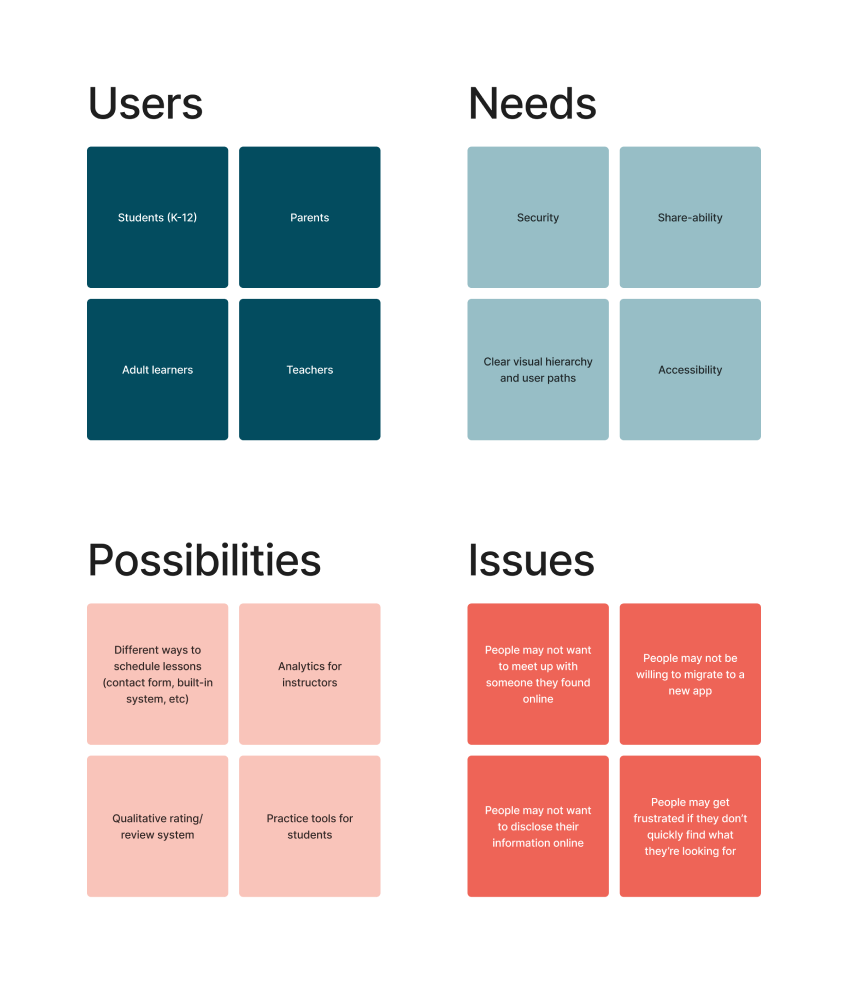

Research
Competitive Analysis
To kick off the research process, I investigated 4 pre-existing platforms with functions similar to Aria’s. In doing so, I identified which features significantly contributed to the experience of finding a music teacher. Notably, none of these features were shared by more than 2 of the competitor sites, suggesting that these held lots of potential for Aria to stand out from the crowd.

Affinity Mapping
Next, I created an affinity map to plan out the scope of the product. Doing so is what ultimately guided me toward the idea of a two-way app—one that doubles as a student resource and a teacher portal. It also proved to be an invaluable tool when proceeding with the remainder of the design process, as it provided a foundation from which to iterate my designs.
